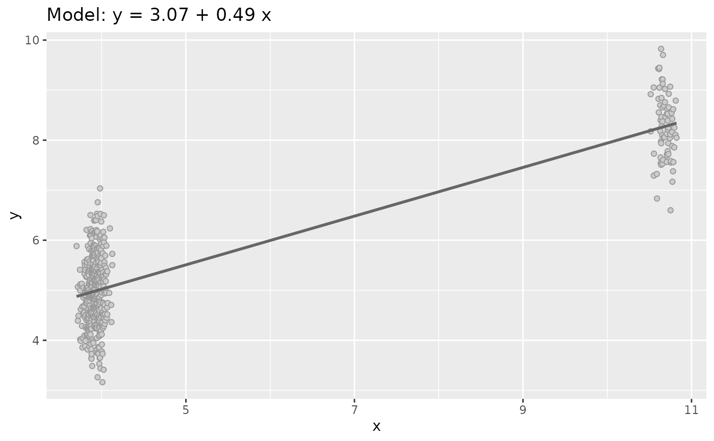
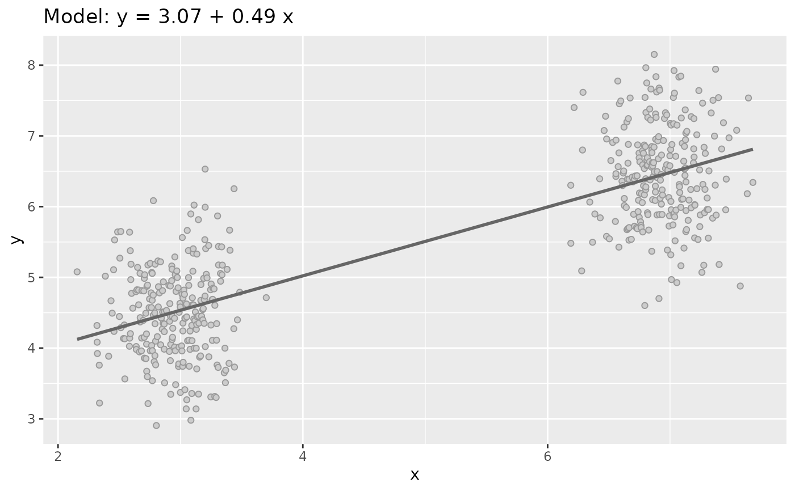

Generate quasi Anscombe data sets Type 4: 2 Clusters
Source:R/quasianscombe.R
sim_quasianscombe_set_4.RdData sets Type 4 recreate two cluster keeping the coefficient of the original regression model.
Usage
sim_quasianscombe_set_4(df, rescale_to = c(0.1, 0.2), prop = 0.15)Details
This function will:
Disorder the order of
xvalues.Rescale the
xvalue to specific original quantiles.Then take a proportion of value and translate to left keeping the original mean of
x.Finally add some value to the associated
yvalue and subtract to the complement group to have the same regression model in terms of coefficients.
Examples
df <- sim_quasianscombe_set_1()
dataset4 <- sim_quasianscombe_set_4(df)
dataset4
#> # A tibble: 500 × 2
#> x y
#> <dbl> <dbl>
#> 1 3.70 5.88
#> 2 3.72 4.39
#> 3 3.72 5.07
#> 4 3.73 4.49
#> 5 3.74 5.41
#> 6 3.74 5.00
#> 7 3.75 4.02
#> 8 3.75 5.12
#> 9 3.75 3.99
#> 10 3.75 4.62
#> # ℹ 490 more rows
plot(dataset4)

plot(sim_quasianscombe_set_4(df, rescale_to = c(0, .1), prop = 0.5))
